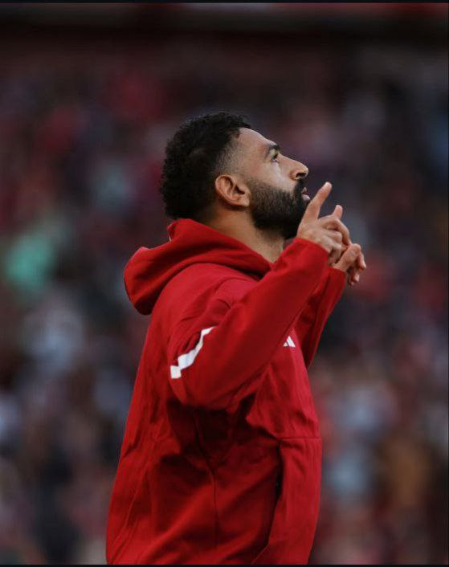
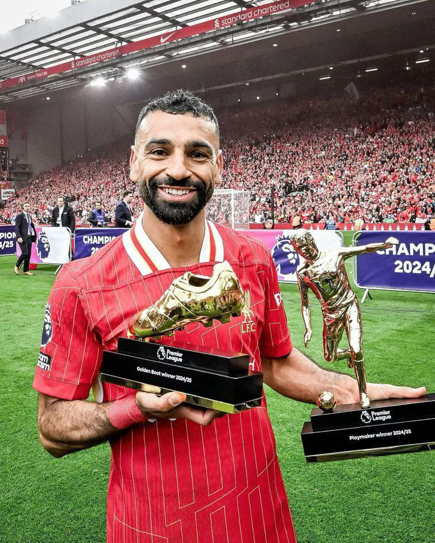
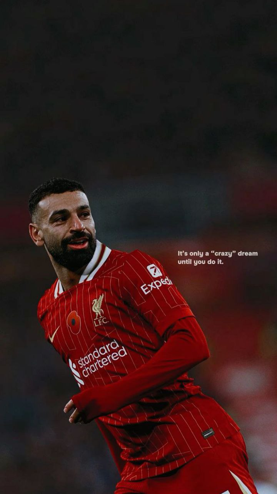
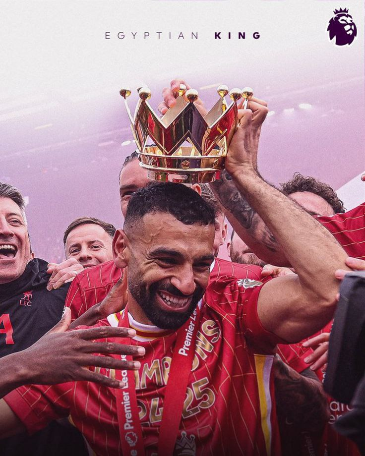

Mohamed Salah
Fazliddin
Shamsiddin
Rayhona
shams oke008
Salah Hamed Mahrous Ghaly (arabcha: محمد صلاح حامد محروس غالي, Misrcha arabcha talaffuz: mæˈħam.mæd sˤɑˈlɑːħ ˈɣæːli[5],15-iyun 1992-yilda tugʻilgan) – Muhammad Saloh yoki Mo Salah nomi bilan tanilgan, misrlik professional futbolchi, Premyer-liganing Liverpool klubida vinger/hujumchi sifatida oʻynaydi va Misr milliy futbol terma jamoasi sardori hisoblanadi. Oʻz avlodining eng yaxshi oʻyinchilaridan biri va barcha davrlarning eng zoʻr afrikalik oʻyinchilaridan biri sifatida eʼtirof etilgan Muhammad Saloh oʻzining klinik koʻrinishi, driblingi va tezligi bilan mashhurdir[6][7][8].
Muhammad Salah Liverpul safida 2021-yil
Salah oʻzining professional futbol faoliyatini 2010-yilda Al Mokawloon Al Arab klubida boshlagan, 2012-yilda Baselga oʻtgan va u yerda ikki marta Shveysariya Superligasi chempionligini qoʻlga kiritgan.
2014-yilda Salah 11 million funt sterling evaziga Chelsi safiga qoʻshildi, ammo cheklangan oʻyin vaqti avval Fiorentina, soʻngra, Roma klublarida ijara asosida oʻynadi, keyinchalik Roma klubi uni 15 million yevro evaziga oʻz jamoasiga qoʻshib oldi.
2016—2017-yilgi mavsumda Salah Romaning muvaffaqiyatsiz chempionlik daʼvosida muhim rol oʻynadi va gollar va golli uzatmalar boʻyicha ikki baravar koʻpaydi. 2017-yilda Salah Liverpoolga 36,9 million funt sterling evaziga transfer qilindi. Oʻzining birinchi mavsumida u 38 oʻyinlik mavsumda Premer-ligada eng koʻp gol urish boʻyicha rekord oʻrnatdi (32) va „Liverpul“ga 2018-yilgi UEFA Chempionlar Ligasi finaliga qadar yordam berdi. Philippe Coutinho ketganidan soʻng Roberto Firmino va Sadio Mane bilan kuchli hujum triosini shakllantirgan Salah keyingi ikki mavsumda klubning Chempionlar ligasi va Premer-liga chempionliklarida ajralmas futbolchi boʻldi va shu vaqtdan beri Angliya kubogi, EFL kubogi va FA Community Shieldni ham qoʻlga kiritdi. Salah koʻplab individual mukofotlarga erishdi, jumladan, PFA tomonidan ikki marta yilning eng yaxshi oʻyinchisi, uchta Premer-liganing „Oltin butsalari“, Premer-ligada mavsumning eng yaxshi oʻyinchisi, Premer-liganing mavsumning eng yaxshi pleymeykeri, FIFA 2018-yilning eng yaxshi erkaklar oʻyinchisi uchun uchinchi oʻrin va 2021 va 2019 va 2022 FIFA Oltin toʻpida beshinchi oʻrinni egalladi. Salah 2017–2018-yilgi mavsumdagi birinchi Mersisayd derbisidagi gʻalabali zarbasi uchun 2018-yilgi FIFA Pushkash mukofotini oldi. 2023-yilda Salah Liverpoolning Premer-ligadagi eng yaxshi toʻpurariga aylandi va klub uchun 200 ta gol urgan beshinchi oʻyinchiga aylandi.
Mohamed Salah Photos



